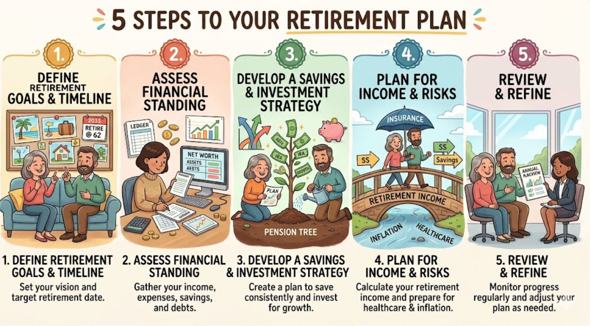

The process of retirement planning involves assessing current finances, setting a desired lifestyle goal, calculating the necessary target portfolio, and implementing an investment strategy to achieve it. Key steps include maximizing savings, managing debts, preparing for healthcare costs, and adjusting portfolios for inflation and market risks
Identify desired lifestyle: Consider where you will live, travel plans, and anticipated expenses.
Estimate retirement age: Determine when you can afford to stop working and when to claim Social Security (earliest age 62, full benefits at 66-67)
Calculate net worth: List all assets and debts.
Estimate costs: Develop a budget that accounts for changes like lower commuting costs but higher healthcare costs
Maximize contributions: Utilize tax-advantaged accounts like 401(k)s and IRAs, ensuring you get employer matches.
Choose investments: Align investments with your risk tolerance, focusing on growth earlier and preservation closer to retirement.
Use an HSA: Consider a Health Savings Account (HSA) to cover future medical expenses tax-free.
Create a withdrawal plan: Use strategies like the 4% rule (use what is appropriate by looking at the numbers from this sheet) to determine how much you can spend from your portfolio annually.
Plan for healthcare: Evaluate Medicare options (Parts A, B, C, D) and long-term care insurance.
Build a buffer: Factor in inflation, potential market downturns, and emergency expenses.
Reassess periodically: Review your investments at least annually to ensure you are on track with your goals.
Adjust as needed: As you approach retirement, shift toward more conservative investments to secure your capital.
As seen above, financial planning for retirement is a part of retirement and needs to be thought through for a proper execution and a happy "next phase" in life also known as retirement 🏆